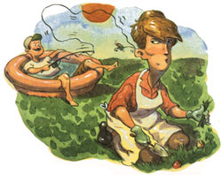

Last Laugh
All the basics, plus tips on sinking gracefully.
I showed my buddy, Spalding, my brand new K-Mart fly rod. Being a man of quiet enthusiasms and gentle opinions, he offered his glowing support by mumbling comparisons to concrete re-rods and clothesline poles. He took me into the backyard and explained about "firm wrist," "back cast," "loading the rod," "snapping to 12:00," and other arcane wisdom. I sucked in the jargon like a camel at an oasis.
We were down in the dirt drawing clock faces, Spalding explaining how the big hand is on the twelve, when his neighbor Ernold came by to ask what we were fishing for in the backyard. It seems Ernold was a little suspicious since he was the kind of fisherman who used bait to catch his Sunfish (not like us classic purists) and planted the fish guts in his tomato garden. Incidentally, he had the biggest tomatoes I have ever seen. I tried some in a salad once, and my wife, who can't stand anchovies, got memorably sick. My cat Zambo loves them though.
So Ernold leaned over the fence to watch me and Spalding snap the fly line between telephone wires and Hollyhocks. "What you want to do that for?"
"We're fly fishing," I said. "Funny way to catch flies," he said. "Joe's trying to hit that sleeping cat over there," Spalding said. "I'm teachin' him cat fishing."
It didn't take long before my enthusiasm for the sport infected Spalding. In fact, despite his suddenly looking a little off his feed, he offered to take me out to his favorite pond and initiate me into the joys of fly fishing. I had a hard time imagining casting, let alone sitting in Spalding's two man inflatable raft, so I went home and sat in my son Smirnoff's (named after the vodka toot that preceded his inauguration) plastic wading pool to practice casting. I was getting pretty handy with my K-Mart special when I tried to tickle my wife's left earlobe as she was weeding. The salesman at K-Mart kept shaking his head wondering what kind of fanatic I was to have worn out a Number 7, double headed, floating fly line in one day. He didn't realize what pruning shears can do to a line's floatability.
I was sitting on a log the next morning explaining all this to Spalding. He need not have been so out of breath from blowing up his raft if he hadn't been so squeamish after I took a turn and then told him about my lingering bout of labia delinquata which the doctor said probably couldn't be transmitted by mouth to inflatable raft nipples anyhow. He managed to rasp out between breaths, "Be sure to be careful when you take the line - out of the package - It will tangle in a second:"
"You mean like this?"
"Yep - Don't worry - I'll untangle it probably in time - for the evening hatch:"
While he worked on my line and tried to catch his breath (I remember thinking he would probably catch his breath faster if he stopped muttering to himself), I strolled down to the pond to watch for the Yellow Popper hatch.
About noon, as I munched on a sandwich (Spalding couldn't eat since his hands were full, and I was sure he wouldn't want to get peanut butter and jelly on my new line), I mentioned that he was a selective aesthete when it came to fishing gear. He took umbrage at that right away and pointed out that just because he wore an Orvis vest over a shredded sweat suit and used a split bamboo rod to cast $.29 rubber spiders, didn't mean he was whatever it was I had accused him of. Anyhow, he allowed, at least he had his priorities straight, and with that we jumped into his raft and shoved off.
Later on, with the two of us sitting knee to knee in the raft, Spalding offered a short in-service on the fine art of setting the hook. I took my lesson in good part and moved on to a personal analysis of the statistical probability of two fly fishermen sitting in the same raft crossing their back cast lines. Before I could complete the study, Spalding decided to put his rod away to allow me a full 360 degrees of unobstructed backcasting space. Actually, he ducked below the water line only to emerge when I snagged the back end of the raft.
He really should stop smoking. He was breathing so heavily while rowing us back to shore that I feared for his health. I don't think he heard me when I tried to reassure him that there wasn't any cause for haste since I was holding up his end by using my K-Mart rod as a derrick to keep the back end high.
How long did it take for the Titanic to sink anyway?
|
 DARREN THOMPSON |
|
|